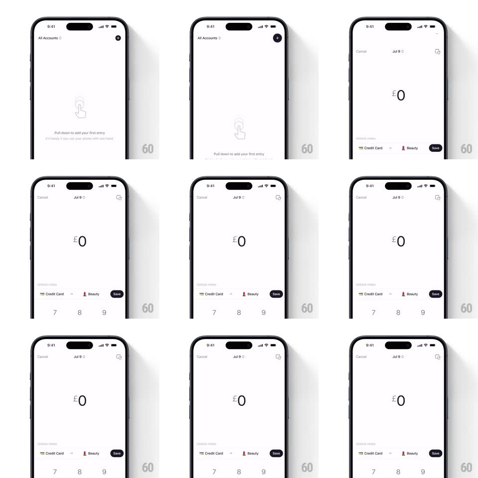

Media
Frame-by-frame

Rebuild this interaction 1:1: Five Cents' pull-to-add - pull down on the empty state and it stretches into the entry-creation screen, header sliding top-down and keypad bottom-up in sync.

Rebuild this interaction 1:1: Five Cents' pull-to-add - pull down on the empty state and it stretches into the entry-creation screen, header sliding top-down and keypad bottom-up in sync.
## Integration
Integration: stack-agnostic spec - springs given as stiffness/damping, timed motions as duration + curve; map every value to your framework and animation library of choice.
## Scene
An empty ledger ("All Accounts", a line-art pull-down hand illustration, "Pull down to add your first entry"). The pull morphs it into the entry screen: Cancel + date ("Jul 9") header, a giant centered amount ("PS0"), an account-to-category row ("Credit Card -> Beauty") with a Save button, and a numeric keypad.
## Motion spec
Pattern: pull-to-create morph.
- Pull down: the empty state tracks the finger (1:1 for the first 80px, then rubber-bands at 0.4x), the hand illustration fading as the header (Cancel, date, note icon) slides in from the top edge, tracking the same drag.
- Past the threshold (~120px), release commits: the entry screen assembles with two synchronized springs - header from top and keypad from bottom (both spring ~380/24, same start time) - while the amount display fades in at center and scales 0.9 to 1.
- Below the threshold, release snaps everything back (spring ~420/26) and the empty-state hint fades back in.
- The account->category row slides in from the left 80ms after the springs start; Save pops last (scale 0.8 to 1, spring ~440/22).
- Keypad presses: digit keys flash their background (120ms) and append to the amount with a tiny upward digit roll (120ms); the amount's currency symbol stays pinned left.
- Cancel reverses the whole assembly: keypad drops, header rises out, empty state crossfades back (300ms total).
## Calibration
- Commit and cancel use the same spring pair - the gesture should feel like one reversible stretch, not two screens.
- The pull hint illustration loops a subtle downward nudge (translateY 0 to 6px, 1.4s) until first use.
## Reduced motion
Pull crosses a fade: empty state and entry screen crossfade at the threshold.
## Don't miss
- The amount starts as "PS0" (or $0) centered and huge - it is the screen's anchor while everything slides around it.
- Save sits inline in the category row, not in the keypad.